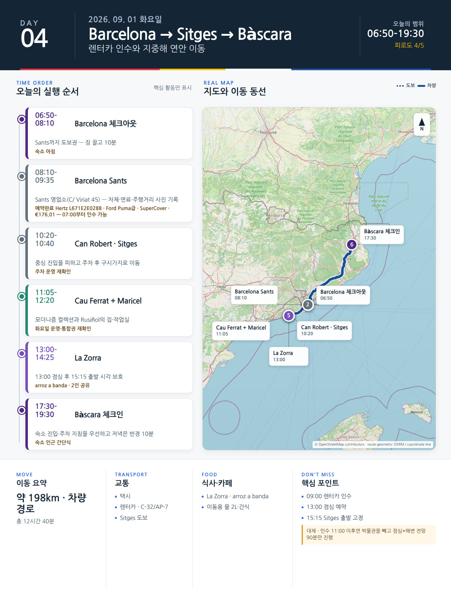

Day 4 · 9/1 화 · Girona
P0 연결거점 이동

카드의 지도영역은 일정 순서를 보여주는 개요이며 내비게이션이 아닙니다. 실제 도보·운전 경로는 Google Maps에서 다시 계산하세요.
시간표
Barcelona
| 시간 | 일정 | 실행 포인트 |
|---|---|---|
| 06:50–07:40 | 기상·숙소 아침·최종 짐 정리 | 냉장고 비우기, 물 2L, 운전 간식, 선글라스, 주차 앱 준비 |
| 07:40–08:10 | 체크아웃 | 숙소 보관이 아니라 짐을 모두 가지고 렌터카 영업소로 이동 |
| 08:10–08:45 | Barcelona Sants 이동 | 택시가 가장 단순하다. 대중교통은 환승·계단 때문에 짐이 많으면 비효율적이다. |
| 09:00–09:35 | 렌터카 인수 | Sants역 지하 SABA 주차장 내 영업소를 우선 검토. 사진·동영상으로 차체, 휠, 유리, 연료, 주행거리 기록 |
| 09:35–10:20 | 바르셀로나→시체스 | C-32 유료구간 사용 권장. 렌터카의 ZBE 적합 여부는 업체가 보장하도록 계약서에 확인한다. |
| 10:20–10:40 | Can Robert 주차 | 중심 진입을 피하는 유료 환승형 주차장. 대안은 24시간 운영 Plaça del Pou Vedre 지하주차장. |
| 10:40–11:05 | 시체스 구시가지 도보 | Carrer de Sant Francesc → Plaça Cap de la Vila → 교회 언덕 방향 |
| 11:05–12:20 | Museu del Cau Ferrat + Museu de Maricel | 화–일 10:00–19:00, 월요일 휴관. 통합 일반권 €6. Rusiñol의 집·작업실과 모더니즘 컬렉션에 집중 |
| 12:20–12:50 | Sant Bartomeu 교회 외관·해변 전망 | 계단과 Baluard에서 스케치 사진 10분. 박물관 관람이 길어지면 해변 산책을 줄인다. |
| 13:00–14:25 | La Zorra 점심 | 쌀요리 전문. 2인 이상 공유. 13:00 예약. 평일 점심 세트 또는 arroz a banda 권장. |
| 14:25–14:55 | Passeig de la Ribera 짧은 산책 | 바다에 들어가기보다 25–30분 산책. 9월 1일부터 해변 구조서비스는 10:00–18:00. |
| 14:55–15:15 | 주차장 복귀·출발 준비 | 화장실, 물, 목적지 주소, 연료 확인 |
| 15:15–17:30 | 시체스→지로나 | C-32 → 바르셀로나 외곽순환 → AP-7. 정상 1시간 45분–2시간, 교통 지연 포함 2시간 15분 계획 |
| 17:30–18:15 | 지로나 주차·체크인 | 구시가지 깊숙이 들어가기 전 숙소의 진입·주차 지침을 따른다. |
| 19:30 이후 | 지로나 가벼운 저녁 | 운전일이므로 숙소 반경 10분 이내에서 식사한다. |
피로도
4/5
이 날의 메모
Barcelona
렌터카 인수, 시체스 모더니즘과 바다, 지로나 이동
운전 3시간 안팎과 체크인 2회가 겹친다. 시체스에서 활동을 추가하지 않는다.
9월 1일의 의사결정 기준
- 렌터카 인수가 10:00 이전 완료되면 위 일정대로 진행한다.
- 인수가 10:00–11:00에 끝나면 시체스 박물관을 60분으로 줄이고 15:15 출발을 유지한다.
- 인수가 11:00 이후면 시체스는 점심+해변 전망 90분만 하고 지로나로 이동한다.
- 폭우·파업·대규모 교통통제가 있으면 시체스를 생략하고 지로나 직행이 원칙이다.
오늘 확인할 것
- 핵심 실행
- Sants 렌터카→Sitges→Girona
- 권장 출발
- 08:00 체크아웃, 09:00 인수 목표
- 완충
- 인수 60분·Sitges 출차 30분
- 최고 리스크
- 렌터카 인수지연·짐 노출
- 우선 삭제
- 해변산책·실내 1곳
- 대체안
- Sitges 1곳만 보고 Girona 직행
- 식사·휴식
- Sitges 점심
- 잠금 필요
- 렌터카·Sitges·Girona 숙소
이 날의 장소
일자별 시간표와 본문 표기에서 찾은 것이다. 하루의 전부가 아니라 장소 카드가 있는 것만 담는다.